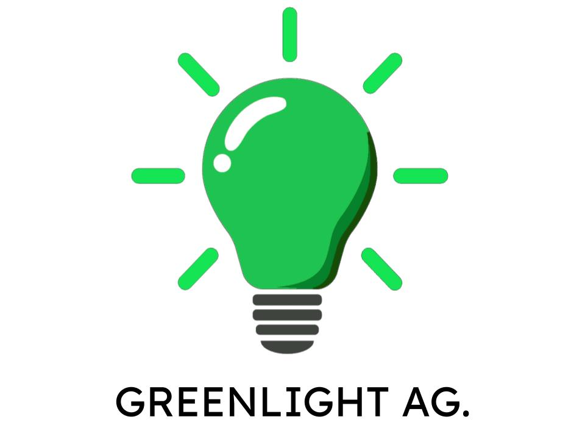
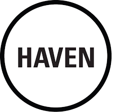
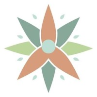

Professional Experience
Teaching · Current
Yale School of Public Health · Teaching Fellow
Sep 2026 – Present
Data Analytics
Microsoft · Murdoch Services Inc.
Jun 2024 – May 2025

AI Engineering
GreenLight Ag. · AI Data Engineering Intern
Jun 2021 – Aug 2021
Education
Mathnasium · Academic Instructor
Jul 2021 – Aug 2022
Leadership & Community

Quality Improvement · Current
HAVEN Free Clinic · QA/QI Volunteer
May 2026 – Present
Healthcare Analytics
STATCOM · Manos Juntos Free Clinic
Feb 2026 – Jun 2026
Finance & Analytics
Student Managed Portfolio Project
Sep 2024 – Jun 2025

Mentorship
Women in Business Leadership Academy
Jan 2024 – Mar 2024